10 部片单 · 恐怖 / 科幻 / 惊悚 / 悬疑 / 剧情
| # | 片名 | 类型 | 评分 / 状态 |
|---|---|---|---|
| 01 | 异形魔怪 | 恐怖 / 喜剧（美国 · 内华达一个叫完美镇的地方） | 7.1 / 88% / 65 |
| 02 | 狂蟒之灾 | 惊悚 / 冒险（美国 / 巴西 · 亚马逊河上的一次拍摄） | 6.7 / 41% / 37 |
| 03 | 八脚怪 | 恐怖 / 喜剧（美国 / 澳大利亚 · 一个矿业小镇的一夜） | 6.2 / 49% / 53 |
| 04 | 普罗米修斯 | 科幻 / 惊悚（美国 / 英国 · 一次去找「谁造了我们」的航行） | 7.7 / 73% / 64 |
| 05 | 侏罗纪世界 | 科幻 / 冒险（美国 · 一座真的开门营业的恐龙乐园） | 7.8 / 72% / 59 |
| 06 | 金刚：骷髅岛 | 动作 / 奇幻（美国 / 中国 · 一座地图上没有的岛） | 6.5 / 75% / 62 |
| 07 | 异星觉醒 | 科幻 / 恐怖（美国 · 国际空间站上的一个意外样本） | 6.5 / 67% / 54 |
| 08 | 异形：契约 | 科幻 / 恐怖（美国 · 契约号上的两千名殖民者） | 7.4 / 65% / 65 |
| 09 | 狂暴巨兽 | 动作 / 科幻（美国 · 三只变异动物和一座芝加哥） | 6.8 / 51% / 45 |
| 10 | 巨齿鲨 | 动作 / 惊悚（中国 / 美国 · 马里亚纳海沟底下还有什么） | 5.7 / 47% / 46 |
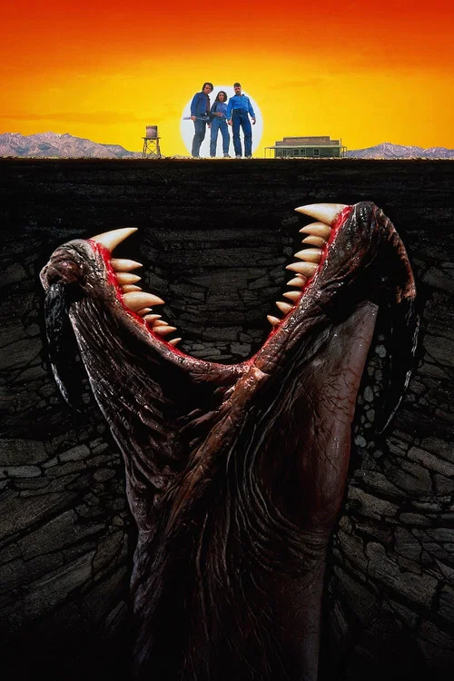
异形魔怪 Tremors
「这下面有东西。而且它在听。」
剧情梗概
内华达州的完美镇一共住着十四个人。瓦伦和厄尔是镇上的杂工，修水管、通下水道，攒够了钱就想走。两人把行李装上车往镇外开，回头却看见镇上的老头死在电线杆上，半个身子埋在土里。再往前走，路基塌了。羊不见了，狗不见了，地质系来的女研究生发现地下的震动不对劲。
亮点
- 罗恩·安德伍德导演，剧本由 S. S. 威尔逊与布伦特·马多克写。这是他的长片处女作，在此之前他只拍过电视电影。
- 成本约 1100 万美元，北美票房约 1670 万美元——上映时算不上成功，是后来的录像带租赁和有线电视重播把它养成 cult 经典的。
- 片中的巨虫叫 Graboid，全部由实体特效完成，制作公司是 Amalgamated Dynamics。导演刻意少给全景，让怪物一直停在画面边缘。
- 凯文·贝肯演瓦伦·麦基，弗雷德·沃德演厄尔·巴塞特——九十年代最好看的一对嘴炮搭档。迈克尔·格罗斯演持枪生存狂伯特·甘默，后来六部续集他一部没落下。
- 片子最初的片名差点叫「陆鲨」，因为和《周六夜现场》的知名小品撞名，才改成现在的样子。
- 豆瓣 7.1 / 烂番茄 88% / Metacritic 65 / IMDb 7.2：本期烂番茄、Metacritic、IMDb 三项最高，也是本期上映最早的一部（1990）。
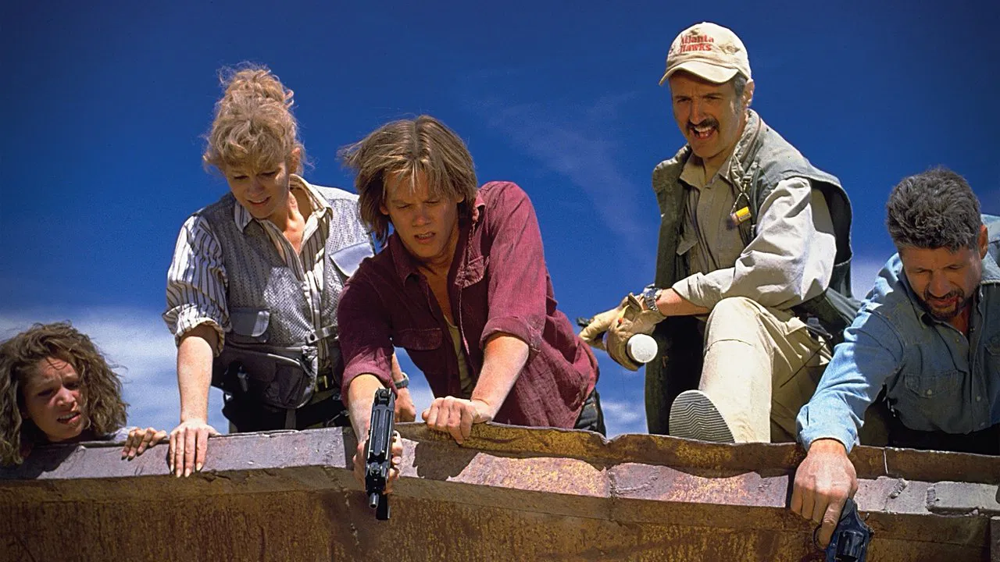
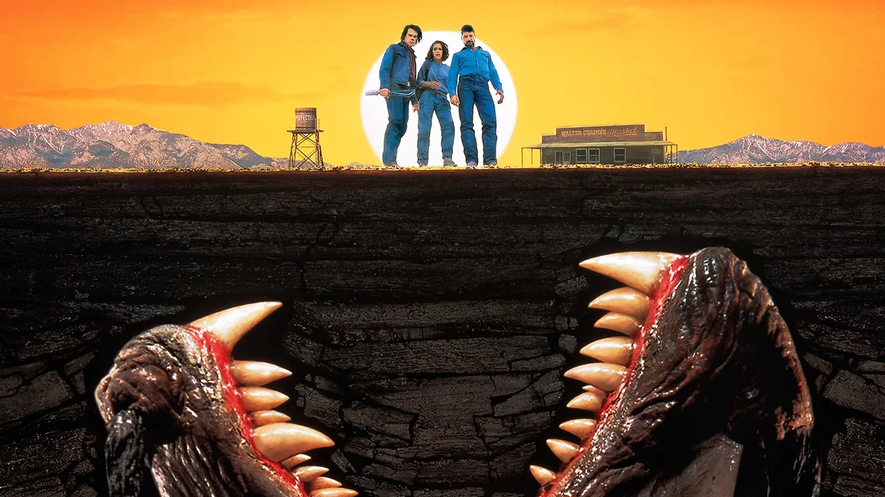
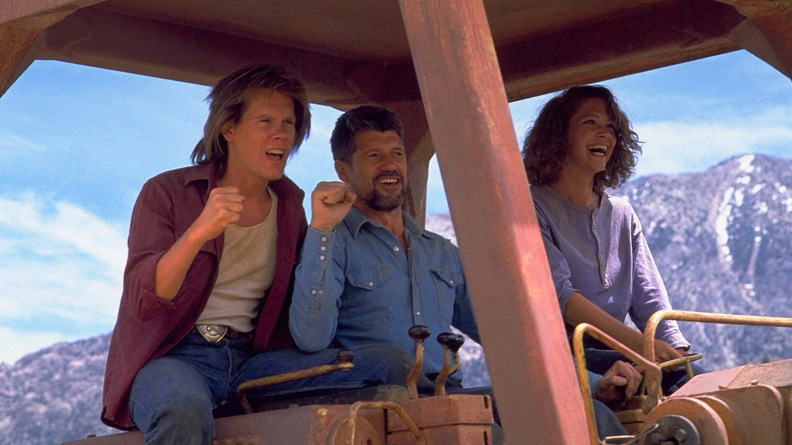
导演与主创 · 他们的历史作品
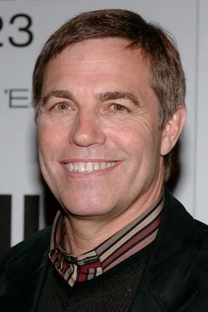
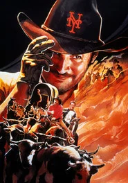
城市乡巴佬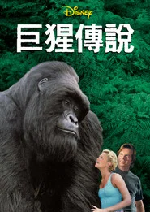
无敌大猩猩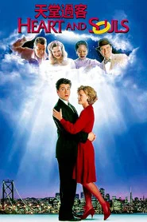
穿梭阴阳间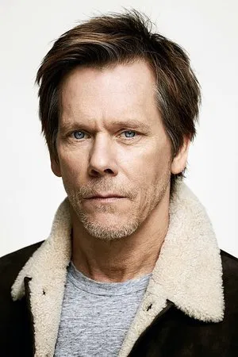
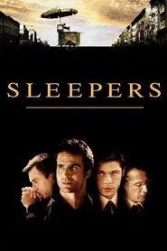
沉睡者 透明人
透明人 X战警：第一战
X战警：第一战 神秘河
神秘河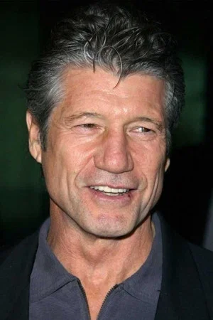
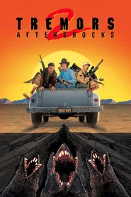
异形魔怪2：余震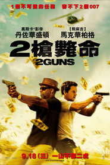
双龙出手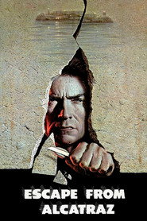
逃出亚卡拉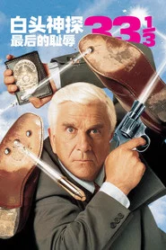
白头神探33⅓：最后的耻辱短评（轻微剧透）
轻微剧透：真正的转折在他们终于意识到这东西不是从天上来、是从脚下来——从那一刻起，「离开完美镇」这个选项失效了，走哪条路底下都有耳朵。轻微剧透：安德伍德最聪明的一处是把危机拆成地形：车不能开、房子不能待、连电线杆都不安全，于是「站在哪儿」成了全片的悬念工具。结尾伯特引爆自家军火库那段，是全片唯一一次让人类主动把规则改回来。
为什么值得一看
想看「低成本能把巨兽拍得多有实感」的人；能接受特效是九十年代水平、前半段节奏偏慢、怪物逻辑经不起细想的观众。PG-13，含生死画面但血浆很少，建议小学高年级以上观看。内地未映，流媒体可看。看完想继续：《八脚怪》《狂蟒之灾》《极度深寒》。
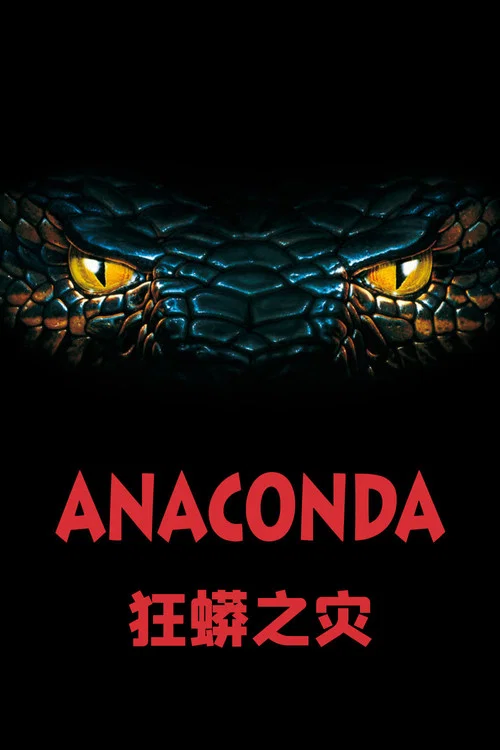
狂蟒之灾 Anaconda
「我们不是在拍部落的纪录片，我们是在给它送饲料。」
剧情梗概
一支七人的纪录片摄制组沿亚马逊河往上游走，要去寻找一支从没被拍到过的部落。河上遇到一艘抛锚的船，一个叫保罗·萨隆的男人上来求搭。他会说话、会掌舵，也知道部落大概在哪；但领航的人类学家很快发现，他讲的那些传说版本对不上。船越走越偏，而这个男人真正要找的东西，比部落大得多。
亮点
- 路易斯·罗沙导演（这是 TMDB 站内译名），秘鲁人，长期在好莱坞拍动作片，本片是他生涯唯一一次真正卖座的电影。
- 成本约 4500 万美元，全球票房约 1.37 亿美元——海外与碟片市场救了它，北美本土连成本线都没摸到。
- 本片拿到 6 项金酸梅奖提名；詹妮弗·洛佩兹则凭它拿到 ALMA 拉丁媒体艺术奖最佳女主角。
- 乔恩·沃伊特演捕蛇人保罗·萨隆，把一个 B 级角色演成了全片最常被引用的一段台词来源，也因此拿到金酸梅提名。
- 片中的蛇是真蟒、机械模型与早期电脑动画混用的，大小不止一条；至今仍有影迷拿着逐帧截图讨论哪条是真蛇。
- 豆瓣 6.7 / 烂番茄 41% / Metacritic 37 / IMDb 4.9：本期专业评价最低——后三项全线垫底，而豆瓣有 6.7，落差也是本期最大。
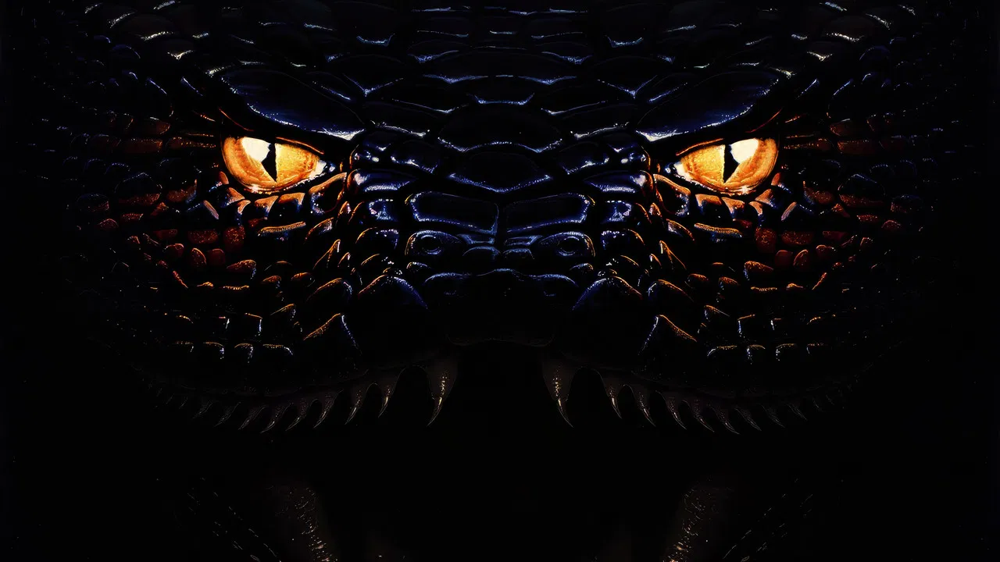
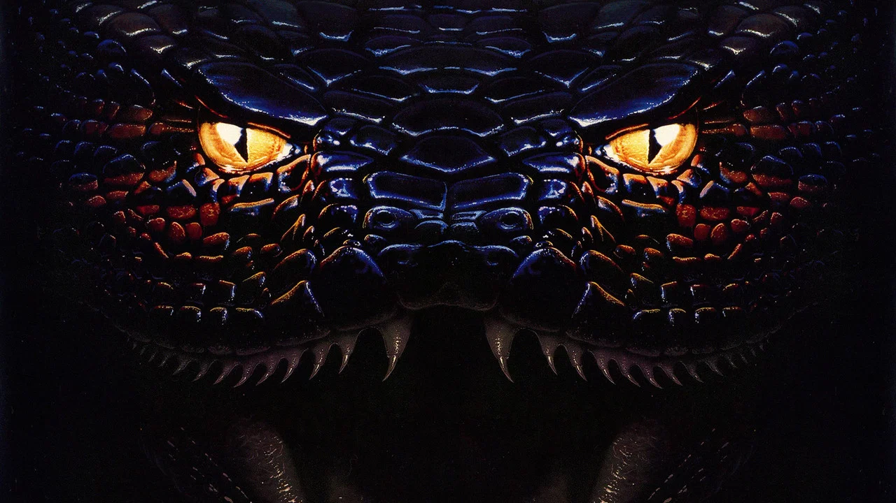
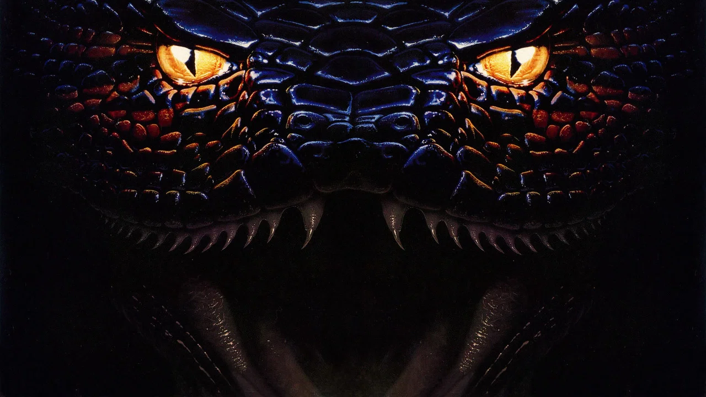
导演与主创 · 他们的历史作品
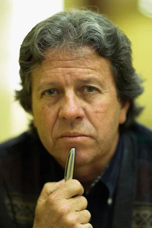
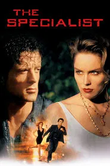
炮弹专家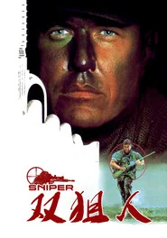
双狙人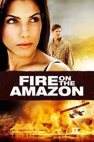
亚马逊之火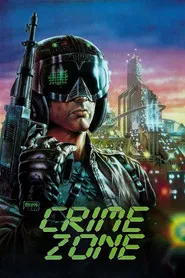
罪恶地带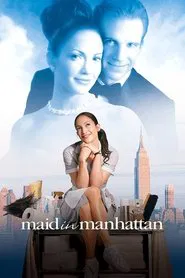
曼哈顿女佣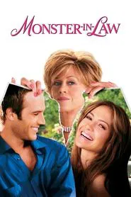
怪兽婆婆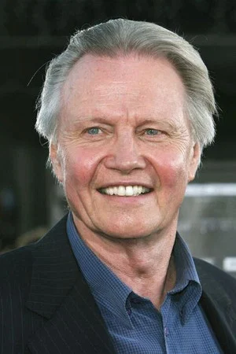
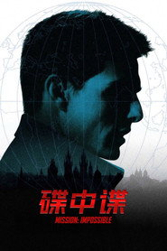
碟中谍 神奇动物在哪里
神奇动物在哪里 盗火线
盗火线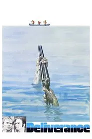
生死狂澜短评（轻微剧透）
轻微剧透：真正的转折在人类学家被黄蜂蜇进喉咙——他从那一刻起躺倒了，船上再没人能反驳萨隆选的那条航道。轻微剧透：这部片最有效的一处是把控制权做成慢慢被夺走：不是抢，是每过一关，那个拿枪的人就更自然地站到了舵的位置。结尾锯木厂那场戏，是全片唯一一次让摄影机不再假装这是一次探险。
为什么值得一看
想看「B 级片的乐趣到底在哪」的人；能接受台词粗糙、蛇的特效经不起高清、人物决策会让你急得跺脚的观众。PG-13，含吞噬与血腥画面，建议高中以上观看。内地未映。看完想继续：《八脚怪》《巨齿鲨》《深海狂鲨》。
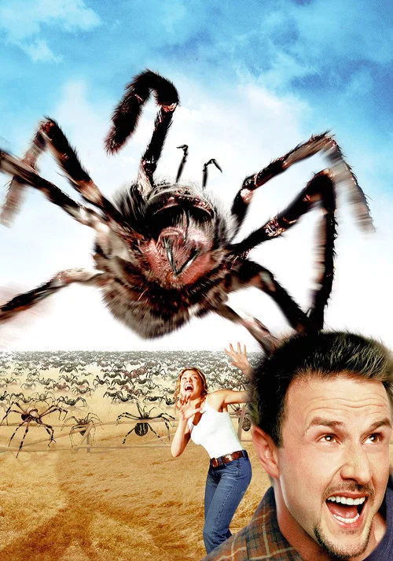
八脚怪 Eight Legged Freaks
「它们不是从外面来的。它们一直在底下。」
剧情梗概
亚利桑那的矿业小镇繁荣镇。一辆运化学原料的卡车在河桥上翻了，废料流进水里，顺着溪流流进镇上那位养蛛人的地下室。第二天，矿井里出现了一根比人还高的蜘蛛腿。最先发现的是十一岁的男孩迈克，而没人肯信他——包括他那位当警长的母亲。等全镇相信的时候，通讯已经断了。
亮点
- 埃洛里·埃尔卡耶姆导演并参与编剧，新西兰人。他靠一部关于巨型昆虫的短片被制片方看中，本片是他的长片处女作。
- 成本约 3000 万美元，全球票房约 4590 万美元——院线是亏的，靠碟片和后来的电视重播才慢慢回本。
- 制片人是迪恩·德夫林，罗兰·艾默里奇任执行制片，走的还是《独立日》那套路子，只是规模缩到了一个小镇。
- 大卫·阿奎特演克里斯·麦科马克——那个本打算卖掉矿井、最后只能带着全镇人往下钻的矿业工程师。卡瑞·伍尔演警长珊姆·帕克。
- 斯嘉丽·约翰逊演迈克的姐姐艾希莉，那年她十七岁，是《迷失东京》之前的一次 B 级片经历。
- 豆瓣 6.2 / 烂番茄 49% / Metacritic 53 / IMDb 5.5：本片拿到过土星奖最佳恐怖片提名，专业评价比前一部《狂蟒之灾》明显高出一截。
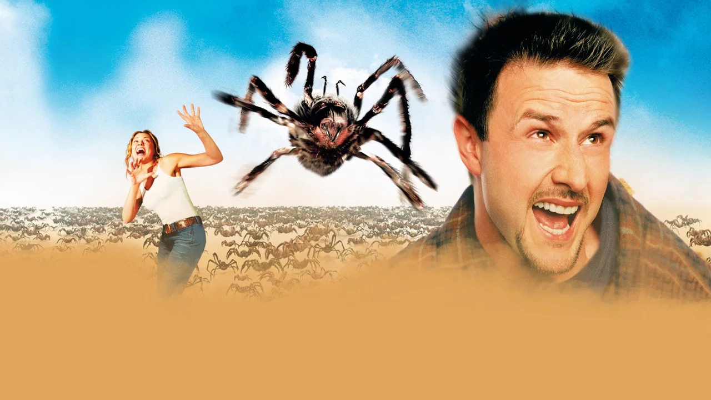
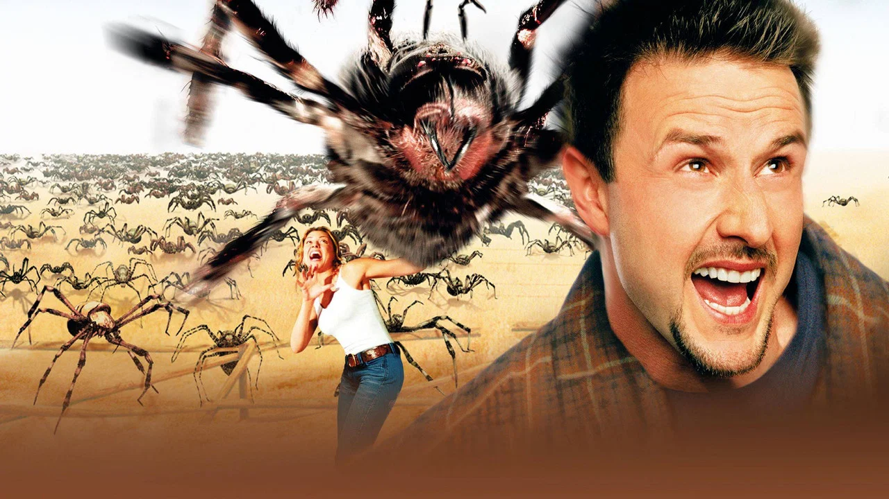
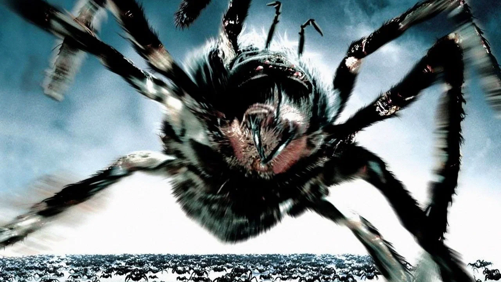
导演与主创 · 他们的历史作品
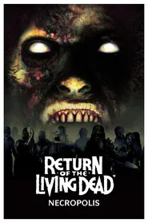
活死人归来4：墓地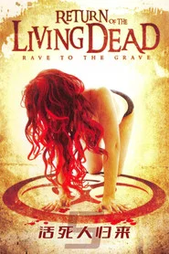
活死人归来5：墓穴咆哮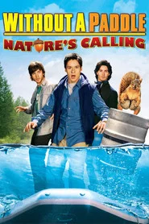
寻宝假期2：自然召唤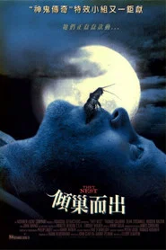
嗜血蟑螂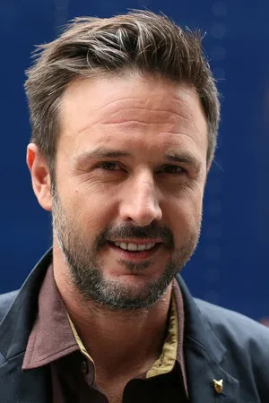
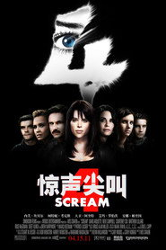
惊声尖叫4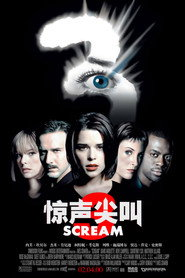
惊声尖叫3 惊声尖叫
惊声尖叫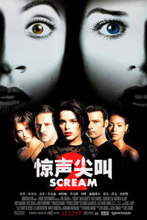
惊声尖叫2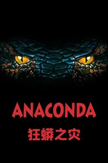
狂蟒之灾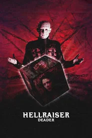
养鬼吃人7：死魂灵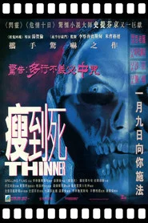
瘦到死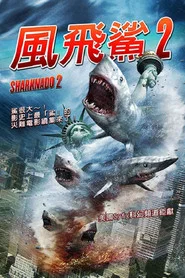
鲨卷风2短评（轻微剧透）
轻微剧透：真正的转折在广播里那句判断——它们不是要吃掉所有人，是在把人往矿里赶。从那一刻起，这部片从避难片变成了围猎片。轻微剧透：埃尔卡耶姆最聪明的一处是把威胁做成分布式：没有头领、没有母虫，杀掉一只又来一只，小镇上的每个人都必须同时应付自己那份。结尾引爆矿井那段，是全片唯一一次让人把「值不值」这道算术题做完。
为什么值得一看
想看「五十年代巨型昆虫片在九十年代末会长什么样」的人；能接受人物偏功能化、幽默密度忽高忽低、蜘蛛体型明显需要忽视物理规律的观众。PG-13，血腥不多但密集爬行画面会让恐虫者不适。内地未映。看完想继续：《异形魔怪》《狂暴巨兽》《极度深寒》。
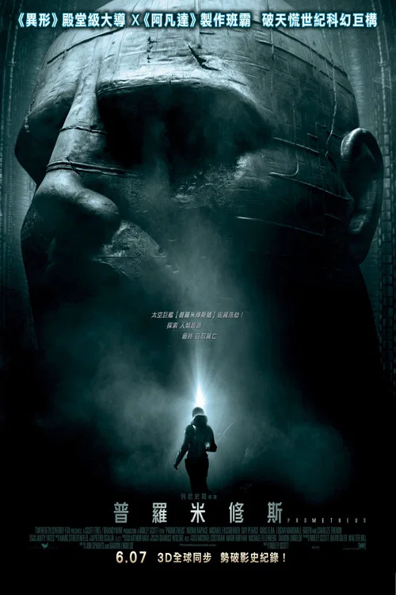
普罗米修斯 Prometheus
「他们造了我们。那谁造了他们？」
剧情梗概
考古学家伊丽莎白·肖和查理·赫洛维在相隔千年的不同文明里找到了同一幅星图。两年后，他们搭乘普罗米修斯号抵达那颗星球：人工的建筑、可以呼吸的空气，还有一整艘埋在地下的飞船。他们唤醒了沉睡的工程师，也带回了一个不该被带回的东西——因为回答问题的人，从不负责回答之后发生的事。
亮点
- 雷德利·斯科特自任导演兼制片，剧本由乔恩·斯派茨与达蒙·林德洛夫写。这是他继《异形》之后三十二年来第一次回到自己建的那个宇宙。
- 成本约 1.3 亿美元，全球票房约 4.03 亿美元；影片拿到奥斯卡最佳视觉效果提名。
- 《异形》的美术设计师 H. R. 吉格回归参与概念设计；片中那些壁画与雕像都是先做成实体再拍摄的。
- 劳米·拉佩斯演伊丽莎白·肖；那场她亲手取出异物的手术戏是她自己的主意，剧组准备了替身，她坚持不用。
- 迈克尔·法斯宾德演仿生人大卫——一个被造来服务、却在无人监督的两年里自学了语言、音色和一部老电影的人。
- 豆瓣 7.7 / 烂番茄 73% / Metacritic 64 / IMDb 7.0：本期豆瓣第二高、IMDb 第二高；它与本期第 8 部《异形：契约》是同一位导演相隔五年的两部作品。
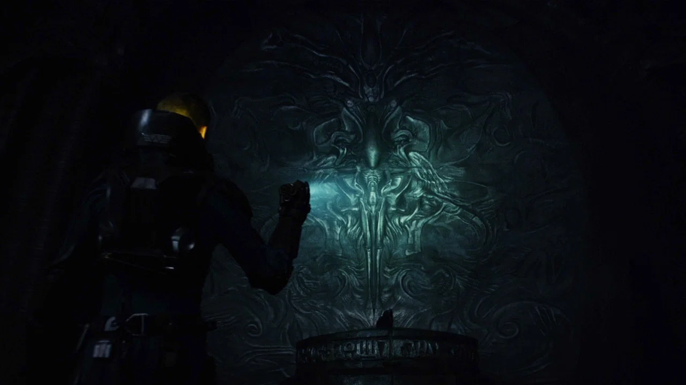
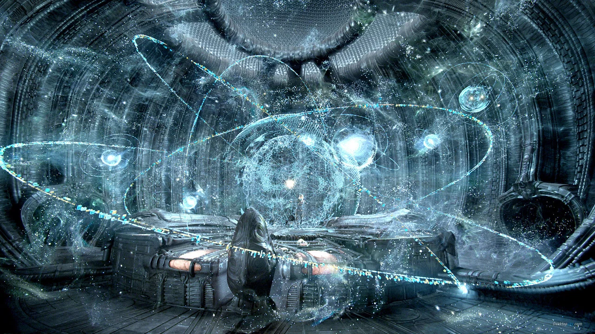
导演与主创 · 他们的历史作品
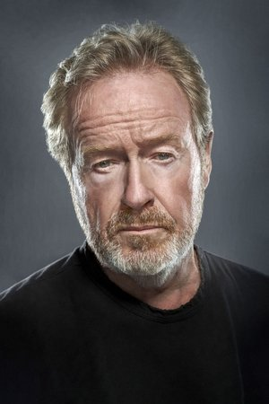
 火星救援
火星救援 角斗士
角斗士 异形
异形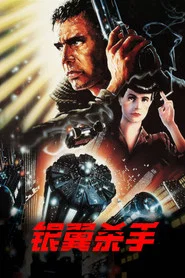
银翼杀手 大侦探福尔摩斯2：诡影游戏
大侦探福尔摩斯2：诡影游戏 光灵
光灵
 异形：契约
异形：契约 刺客信条
刺客信条 X战警：天启X战警：第一战
X战警：天启X战警：第一战短评（轻微剧透）
轻微剧透：真正的转折在「需要医疗舱」这四个字——前面所有关于信仰、关于被造的意义，忽然都要让位给一件很具体的事，而舱的输入标准把一整个人群排除在外。轻微剧透：斯科特把这部片拍得像一次考古发掘：每一层答案底下都还压着一层更难的问题。结尾肖不再索要答案、而是决定去问本人那段，是全片唯一一次让人意识到好奇心在这里不是美德，是本能。
为什么值得一看
想看「科幻片能把造物主题推到多远」的人；能接受角色决策会让你着急、部分设定留到下一部才解释、以及 124 分钟节奏不均的观众。R 级，含手术与恐怖画面，建议成年观看。内地公映过，流媒体可看。看完想继续：《异形：契约》《异形》《银翼杀手》。
侏罗纪世界 Jurassic World
「这个乐园开了二十二年。没有新东西，人们就不来了。」
剧情梗概
努布拉岛上的侏罗纪世界真的在营业，每天两万多名游客进场看恐龙。运营总监克莱尔为了拉升刺激度，让大家造了一头基因混编的新型掠食者。它比预期聪明：会记位置、会蹭掉自己的追踪器，也会把翼龙放出去。而克莱尔的两个外甥正在园区里，她还没来得及知道。
亮点
- 科林·特雷沃罗导演并参与编剧，斯皮尔伯格任制片；在此之前他只拍过一部成本不到百万的小片。
- 成本约 1.5 亿美元，全球票房约 16.7 亿美元，是 2015 年全球票房亚军——本期票房最高，也是本期唯一一部十亿美元级。
- 故事位置直接放在《侏罗纪公园》荒废二十二年之后，1993 年那座旧乐园的遗址在片中真的出现了。
- 克里斯·帕拉特演驯龙员欧文·格雷迪，布莱丝·达拉斯·霍华德演运营总监克莱尔——本系列第一次不再由科学家担任主角。
- 黄荣亮是唯一从 1993 年那部回归的老演员，他演的吴博士在二十二年后站到了另一边。
- 豆瓣 7.8 / 烂番茄 72% / Metacritic 59 / IMDb 6.9：本期豆瓣最高；但 Metacritic 只有 59，华语与专业评价落差明显。
导演与主创 · 他们的历史作品

 银河护卫队
银河护卫队 银河护卫队2
银河护卫队2 侏罗纪世界2
侏罗纪世界2 超级马力欧兄弟大电影侏罗纪世界2
超级马力欧兄弟大电影侏罗纪世界2 相助
相助短评（轻微剧透）
轻微剧透：真正的转折不在混编龙跑了，在那句「我想看看它在实战里怎么用」——从那一刻起，这部片说的不再是管理失控，而是有人把失控当成方案在卖。轻微剧透：特雷沃罗最有效的一处是让这些动物成为角色而非特效集合：把鼻子蹭向驯龙员的那几秒，比任何一场追逐都贵。结尾霸王龙站上旧控制中心屋顶那一声长吼，是全片唯一一次让「乐园终于结束了」听起来像松了一口气。
为什么值得一看
想看「巨兽能被拍成多大的场面」的人；能接受人物动机偏功能化、生物设定经不起推敲、以及它本质上是一封写给 1993 年那部的情书的观众。PG-13，含追逐与吞噬画面，建议小学高年级以上在家长陪同下观看。内地公映过，流媒体可看。看完想继续：《侏罗纪公园》《金刚：骷髅岛》《环太平洋》。
金刚：骷髅岛 Kong: Skull Island
「把仪器关掉。这个地方不该出现在地图上。」
剧情梗概
1973 年，一场战争刚刚结束。一支由军人、科学家、制图师和一名战地摄影师组成的队伍登上传闻中的骷髅岛。空中投下的地震炸弹掀开了雾，也彻底打扰了岛上那位长者。日落之前他们失去了大半队伍，而负责护送他们出来的那位上校已经决定：这场战斗不是为了回家。
亮点
- 乔丹·沃格特-罗伯茨导演，此前只拍过一部独立片《夏日之王》；这是他第一次执掌 A 级大片，也是「怪兽宇宙」的第二部。
- 成本约 1.85 亿美元，全球票房约 5.67 亿美元；片中的金刚设定为一百英尺（约三十米），是历代银幕上最大的一版。
- 影片大量实景拍摄，取景地包括越南下龙湾、峰牙、夏威夷与澳大利亚；水上机动的段落几乎全是真人上阵。
- 汤姆·希德勒斯顿演前特种兵追踪者詹姆斯·康拉德，布丽·拉尔森演战地摄影师梅森·韦弗——两年后她主演了《惊奇队长》。
- 塞缪尔·杰克逊演帕卡德上校；他在往期第 44 期《深海狂鲨》里演的那个投资方，开场不到半小时就被吃掉了，本期他活到了最后三分之一。
- 约翰·C·赖利演一位 1944 年就坠落在岛上、从此没能离开的飞行员，片尾字幕之前那段是他全片最松弛的部分。
导演与主创 · 他们的历史作品
 雷神
雷神 雷神3：诸神黄昏
雷神3：诸神黄昏 雷神2：黑暗世界
雷神2：黑暗世界 复仇者联盟
复仇者联盟 惊奇队长
惊奇队长短评（轻微剧透）
轻微剧透：真正的转折在当地人刻下的那句评价——他是最后的。那一刻起，这座岛的生态逻辑从「有怪物」变成了「只剩这一个」。轻微剧透：导演把这部片拍得像一场没有双方同意的和谈：每个构图都在提醒人有多大，而那位长者在多数画面里只是背景。结尾两名幸存者站在水边听见吼声那段，是全片唯一一次让「保全这次任务」这件事彻底失效。
为什么值得一看
想看「巨兽片能被拍得多像越战片」的人；能接受剧情偏薄、多位配角只起代号作用、以及它明显在给后面的作品铺路的观众。PG-13，含战斗与吞噬画面，建议初中以上观看。内地公映过，流媒体可看。看完想继续：《侏罗纪世界》《金刚》《环太平洋》。
异星觉醒 Life
「它不是恶意的。它只是在活。」
剧情梗概
六名宇航员在国际空间站上等待一艘从火星返航的探测器。舱内带回的土壤样本里有一个休眠的细胞，被唤醒后它开始分裂——它的每一个单元同时充当肌肉、皮肤和大脑。人类等了几十年的第一个地外生命，是被自己亲手打开瓶子放出来的。
亮点
- 丹尼尔·埃斯皮诺萨导演，剧本由瑞特·里斯与保罗·韦尼克写——这两个人上一部上映的作品是《死侍》。
- 成本约 5800 万美元，全球票房约 1 亿美元；内地票房约 1.35 亿元人民币，是它最大的海外市场之一。
- 这个生命在全美被征集到了「卡尔文」这个名字；它的设定是全身每个部分都能独立完成感知、运动与进食。
- 杰克·吉伦哈尔演大卫·乔丹——在空间站待得最久、也最不想回地球的那个人；他在往期第 40 期《后天》的主创卡片上出现过。
- 丽贝卡·弗格森演隔离官米兰达·诺斯，全片唯一一个从头到尾坚持「任何情况下都不能让它接触地球」的人。
- 豆瓣 6.5 / 烂番茄 67% / Metacritic 54 / IMDb 6.6：上映时被大量评论拿来与《异形》比较，导演当时的回应是「我们拍的是地心引力的反面」。
导演与主创 · 他们的历史作品
 莫比亚斯：暗夜博士
莫比亚斯：暗夜博士
 死亡幻觉
死亡幻觉 夜行者
夜行者 十二宫
十二宫 源代码
源代码
 沙丘
沙丘 火车上的女孩
火车上的女孩 沙丘2
沙丘2 马戏之王
马戏之王短评（轻微剧透）
轻微剧透：真正的转折在有人松开绳子、把自己扔向舱外的那一跃——从那一刻起，「能不能活」和「能不能保住地球」不再指向同一个答案。轻微剧透：这部片最狠的一处是把密室做成两层：一层是钢铁的空间站，一层是这个生命本身，你既出不去也没法谈判。结尾两个逃生舱分向两头那段，是全片唯一一次让观看者自己决定先看哪一边。
为什么值得一看
想看「太空恐怖能被做到多窒息」的人；能接受船员决策偏工具人、个别物理细节经不起推敲、以及结局相当不友好的观众。R 级，含身体恐怖与死伤画面，建议成年观看。内地公映过，流媒体可看。看完想继续：《异形》《普罗米修斯》《地心引力》。
异形：契约 Alien: Covenant
「我服务于更高的东西。它比你们更早。」
剧情梗概
殖民船契约号载着两千名殖民者和一千多个胚胎，要去银河另一边建立殖民地。一次中微子冲击打坏了能量收集帆，船长当场身亡。代理船长欧朗带着剩下的船员，顺着一段被翻译出来的信号降落到了那颗星球。星球上只有一个人等着他们，那人自称是大卫，说自己是上一位科学家的仆人。
亮点
- 雷德利·斯科特自任导演兼制片；本期第 4 部《普罗米修斯》也是他导的，两部相隔五年，中间隔着一个让影迷争论了很久的结局。
- 成本约 9700 万美元，全球票房约 2.409 亿美元；内地版做了约六分钟的删减，这是它在华语区口碑低于本土的主要原因之一。
- 迈克尔·法斯宾德一人分饰大卫与沃尔特两个仿生人，两人的对手戏是他自己对着空气演完的，另一条则由替身与后期合成完成。
- 凯瑟琳·沃特斯顿演丹妮尔斯·布兰森，接过这一系列女主的位置；她在片中的每一个决定都是在失去身边的人之后做出的。
- 影片开头那段极简的白房间戏发生在《普罗米修斯》之前：一位创始人第一次见到自己造出来的东西。
- 豆瓣 7.4 / 烂番茄 65% / Metacritic 65 / IMDb 6.4：Metacritic 与《异形魔怪》并列本期最高（65），豆瓣则是本期第三。
导演与主创 · 他们的历史作品
火星救援角斗士异形
刺客信条X战警：天启X战警：第一战 普罗米修斯神奇动物在哪里
普罗米修斯神奇动物在哪里 神奇动物：格林德沃之罪
神奇动物：格林德沃之罪 史蒂夫·乔布斯
史蒂夫·乔布斯短评（轻微剧透）
轻微剧透：真正的转折在他给的那口空气——不是刀口，是让人可以呼吸的东西。那一刻起，这部片的问题从「怎么逃」变成了「谁有资格定义下一代」。轻微剧透：斯科特把恐怖留在繁殖这件事上：回溯、孕育、破背，每一步都比上部更直接。结尾女主角进入休眠之前最后一次检查舱位那个镜头，是全片唯一一次让观众替她确认事情没有结束。
为什么值得一看
想看「科幻恐怖能把造物主题推到多阴冷」的人；能接受需要在《普罗米修斯》之后看才完整、内地版有删减、以及结局对系列粉丝相当不友好的观众。R 级，含大量恐怖与血腥画面，建议成年观看。内地公映过（删减版），流媒体可看。看完想继续：《普罗米修斯》《异形》《异形：夺命舰》。
狂暴巨兽 Rampage
「它不是变大了。它是被允许变大了。」
剧情梗概
灵长类动物学家戴维斯能用手语和一头名叫乔治的白背大猩猩吵架，这段关系比他和大多数人的都好。轨道上一间私营基因实验室出事了，三支样本坠回地球：落在佛罗里达的成了鳄鱼，落在怀俄明的成了狼，而被乔治吸入的那支，让它长到了十米以上。三只同时朝芝加哥去。
亮点
- 布拉德·佩顿导演兼制片，本片改编自 1986 年的同名街机游戏——当年玩家操作的就是这三只怪物。
- 成本约 1.2 亿美元，全球票房约 4.28 亿美元；内地是它最大的海外市场，北美观众给出的 CinemaScore 是 A-。
- 这是佩顿与道恩·强森的第三次合作，前两次是《地心历险记 2：神秘岛》与《末日崩塌》。
- 道恩·强森演戴维斯·奥科耶，一个把所有感情都给了猩猩的人；娜奥米·哈里斯演基因学家凯特·考德威尔——她在往期第 40 期《惊变28天》的主创卡片上出现过。
- 杰弗里·迪恩·摩根演探员拉塞尔；他更被记住的角色是《行尸走肉》里的尼根，本片顺势用了这个反差。
- 豆瓣 6.8 / 烂番茄 51% / Metacritic 45 / IMDb 6.4：三只怪物在这部片里是同源的，但剧情没有给任何铺垫就直接让它们同时开打。
导演与主创 · 他们的历史作品
 勇敢者游戏：决战丛林
勇敢者游戏：决战丛林 勇敢者游戏2：再战巅峰
勇敢者游戏2：再战巅峰
 惊变28天
惊变28天 007：大破天幕杀机
007：大破天幕杀机 毒液2
毒液2 007：幽灵党
007：幽灵党短评（轻微剧透）
轻微剧透：真正的转折在乔治把东西递回来那一刻——从那时起，这部片说的不再是「动物发狂」，而是「被改造过的一方最后帮着收拾残局」。轻微剧透：导演最聪明的一处是让这座城市成为第四个角色：每过一分钟，战场就升高一层。结尾主角站在楼顶做出的那个决定，是全片唯一一次让影片承认自己就是一部灾难片。
为什么值得一看
想看「爆米花大片能把楼捅得多狠」的人；能接受剧情、反派和物理全部让位于场面，以及结局基本没有代价的观众。PG-13，含砸楼与吞噬画面，建议初中以上观看。内地公映过，流媒体可看。看完想继续：《侏罗纪世界》《环太平洋》《巨齿鲨》。
巨齿鲨 The Meg
「它不在那儿。只是从来没人真的下去看过。」
剧情梗概
一处国际深海观测项目在马里亚纳海沟下探到了比已知海床更深的一层，那层水被一道硫化氢温跃层封着。作业潜艇遭到撞击，三个人困在下面。深海救援潜水员乔纳斯·泰勒五年前在同一条海沟里见过那东西，当时没人信他，他被判定为压力造成的幻觉。现在，有人打电话给他了。
亮点
- 乔·德特杜巴导演（TMDB 站内译名），改编自史蒂夫·艾尔顿 1997 年出版的小说——这本小说比电影早了二十一年。
- 成本约 1.3 亿美元，全球票房约 5.3 亿美元；这是第一部由中国公司主控、全球同步发行的中美合拍英语片。
- 原著作者当年为这本书查了大量古生物资料，把巨齿鲨的体长设定在当时科学能接受的上限附近。
- 杰森·斯坦森演乔纳斯·泰勒——一个被行业判定为疯子、五年后又被同一个行业请回去的人。
- 李冰冰演海洋生物学家张苏茵，赵文瑄演她的父亲张博士，两人承担了片中大部分专业戏；本片也是本期唯一一部由华语演员担任主角的好莱坞制作。
- 豆瓣 5.7 / 烂番茄 47% / Metacritic 46 / IMDb 5.7：本期豆瓣与 IMDb 最低；猫眼观众端却有 8 分以上，落差明显。
导演与主创 · 他们的历史作品
 国家宝藏
国家宝藏 变形金刚4：绝迹重生
变形金刚4：绝迹重生 生化危机5：惩罚
生化危机5：惩罚短评（轻微剧透）
轻微剧透：真正的转折在他们决定用声呐把那东西引上来——从那一刻起，「救人」和「把自家门打开」变成了同一件事。轻微剧透：这部片最有效的一处是把深度做成压力本身：不靠鲨鱼有多凶，而靠换算「头顶还有多少海水」。结尾主角带着装具直接下水那一跃，是全片唯一一次让他不再依赖任何载具。
为什么值得一看
想看「鲨鱼片还能拍多大」的人；能接受剧情和人物都偏套路、个别画面经不起细看、以及它本质上是一部大制作的 B 级片的观众。PG-13，含水下追逐与吞噬画面，深海恐惧者慎看。内地同步上映过，流媒体可看。看完想继续：《大白鲨》《深海狂鲨》《狂蟒之灾》。